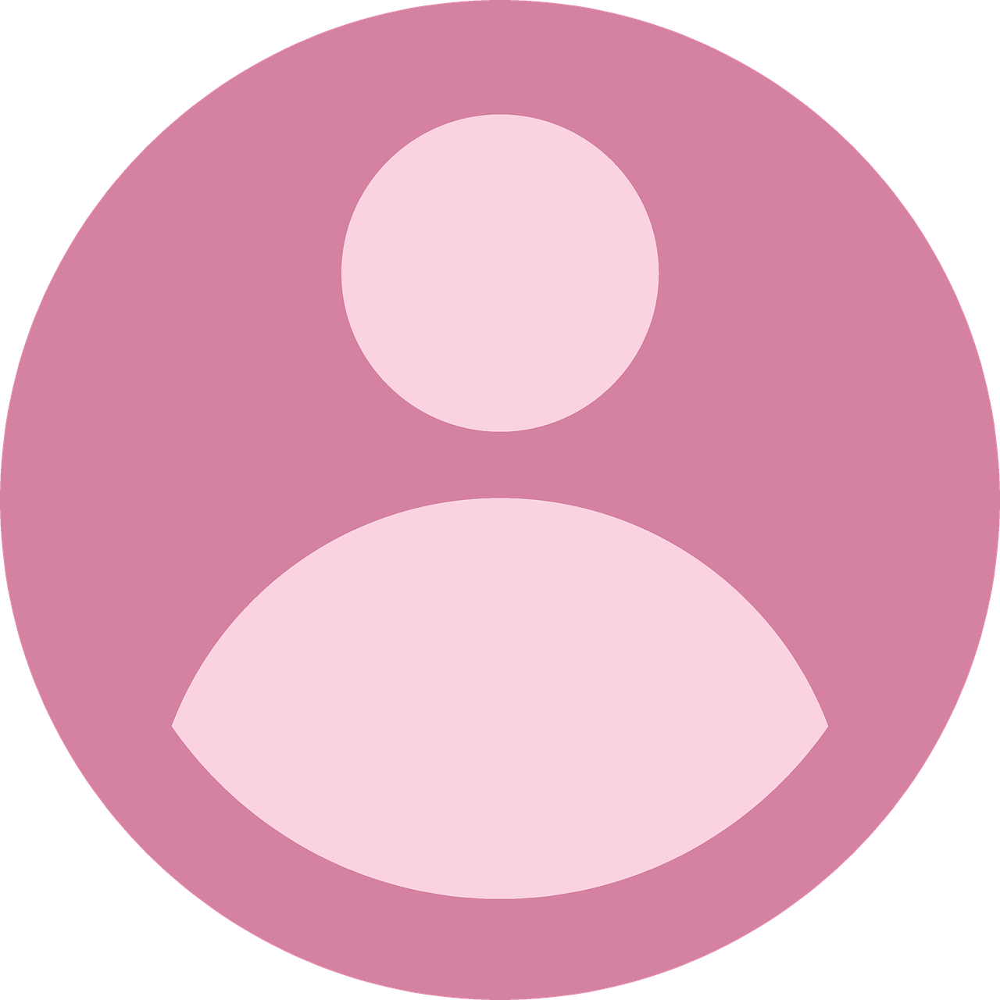

Di Publis Pada, 12 April 2024
Bagaimana Instalasi Mendeley Desktop untuk Windows
Mendeley adalah manajer referensi gratis yang dapat membantu Anda menyimpan, mengatur,
mencatat, membagikan, dan mengutip referensi dan data penelitian. Untuk dapat menginstall aplikasi ini
dikomputer anda, dapat mengikuti step by step
Unduh/download aplikasi mandeley destop di halaman
https://www.mendeley.com/downloads
Simpan Mendeley Desktop ke hard drive Anda.
Lakukan instalasi Mendeley Desktop dengan cara Klik dua kali ikon Mendeley Desktop di
jendela unduhan browser Anda, dan ikuti petunjuk di layar.
Buka Mendeley Desktop. Aplikasi mendeley perlu pembuatan akun sehingga dapat tersynkron
nantinya.
Instalasi Plugin Mendeley Untuk Microsoft Word
Setelah aplikasi mendeley terbuka, silahkan pilih menu tools dan opsi yang terpilih
Lakukan instalasi sehingga tersedia aplikasi mendeley pada aplikasi ms word pada menu
References.

Software
Download dan Install Visual Studio Code Di Windows
03 Maret 2024
Apa itu Visual Studio Code? Visual studio Code atau VS Code adalah software text
editor atau editor kode sumber buatan Microsoft yang bisa kita dapat secara gratis.

keke

Kesehatan
8 Rahasia Wanita agar Tampil Cantik Alami, Luar dan Dalam
12 Maret 2024
Memiliki paras cantik alami tentu jadi idaman banyak orang. Anda bisa mewujudkan
impian tersebut dengan melakukan perubahan gaya hidup yang bukan cuma menjaga kecantikan, melainkan juga
menyehatkan tubuh.
keke

Bisnis & Karir
Bekerja di Era Digital: Gimana Cara Biar Nggak Tertinggal Zaman?
16 Maret 2024
Bekerja di era digital seperti sekarang ini bisa jadi tantangan tersendiri.
Semua orang berlomba-lomba untuk meningkatkan skill dan menyesuaikan diri dengan teknologi baru. Buat
Gen Z, yang dikenal dengan kreativitas dan kecepatan beradaptasi, situasi ini mungkin terasa lebih
mudah. Namun, tetap saja, kita perlu strategi untuk tetap relevan dan tidak ketinggalan zaman..
keke